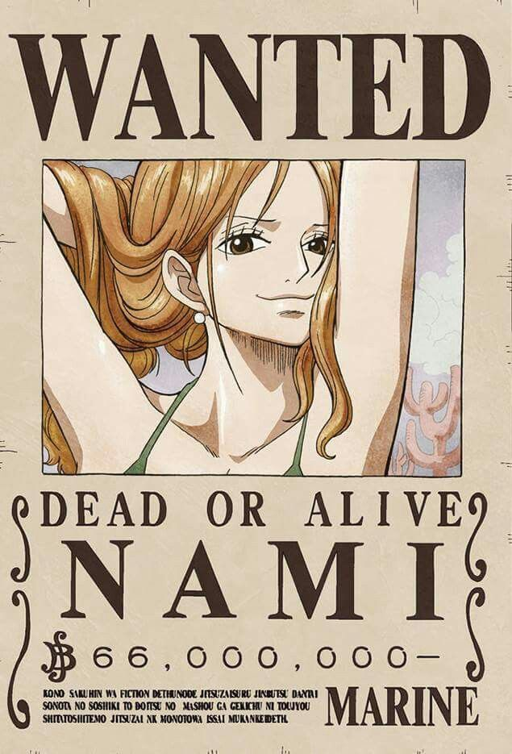
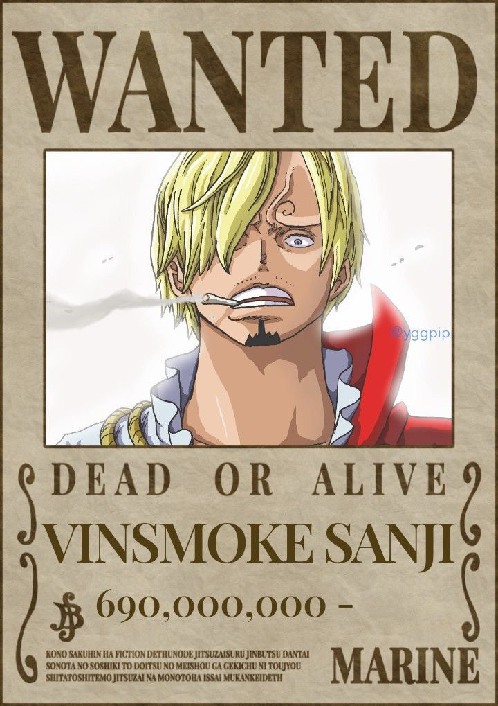

roronoa zoro
pirate hunter zoro
Zoro es el vicecapitan de la tripulacion de luufy y mano derecha del mismo, fue el primer miembro del , formas parte del "trio monstruoso" y usa el santoryu estilo de tres espada.
a derrotato innumerables enemigos como Mss.1, kaku, pica, king,etc.* su objetivo es comvertirse en el mejor espadachin del mundo derrotando al actual poseedor del mismo *dracule mihawk*
- vicecapitan
Nami

cat burglar
nami o como otros la cnocen, la inutil del grupo. fue la "segunda" en la tripulacion. su froma de pelea si se le puede llar pelea es unsar su clim tact para manipular el clima. su ovjetivo es cartografiar el mundo, en otras palabras hacer un mapa del mundo. derrotado a una de jabon cp9, y...... y ese fue su unico logro aparte de tener dos melones mas grandes que zandias
- navegante
usopp
god D. usopp
god usopp es el tercer tripulante, es parte del monstruo ya que el trio monstruoso esta por debajo de el, es el mas util e inteligente de la tripulacion, posee haki de rey, armamento y vision, pudo derrotar a los dos mas fuertes al mismo tiempo, gold d roger y barbablanca. tiene un alcanse de vision de kilometros y una punteria perfecta(sogeking es su amigo)
tirador
vinsmoke sanji

black leg
sanji es el mejor cocinero del mundo y forma parte del trio monstruoso, su mayor debilidad es que el puto no golpea a las mueres, pero sin contar eso su estilo de combate de solo usar las piernas y su diable jambe es imparable tiene haki de armamento y vision mas su jifrit jambe pudo derrotar a decenas de enemigos formidables. aparte es re fachero
- cosinero
tony tony chopper
cotton candy lover
es la mascota de la tripulacion. habilidades 0, haki ninguno, doctor piola solo.objetivo ninguno.que es doctor y mascota, chau
- doctor
nico robin

light of the revolution
Robin es la mugiwara más importante ya que sin ella el anime directamente no tiene propósito, su técnica más rotación es la de volverse de morena a aciatica con filtros en dos años, y que por cada capítulos las tetas le crecen 2cm. Habilidad especial? Sacar manitos y manitas. Y saber leer, nada más.
- arqueologa
franky
iron man
Es el albañil del grupo y, como buen albañil, tiene altos musculos. También es conocido como el pervertido del grupo ya que nunca lleva pantalones. Es el constructor del sunny y, además es un cyborg, debido a que él mismo modifico su cuerpo…bueno.. todo excepto su espalda… la cual es una espalda normal ya que no llega ahí. Pero lo mas importante de este personaje es que tiene un robot que dispara RAYOS LACERS. Tremendo.
- albañil
brook
soul king
Es el musico de la tripulación. Sus habilidades son correr en el agua, y pararse en 45°. Aunque se a pasa haciendo chistes malos, se le paro de mano a big mom el hdp. Que grande. Su objetivo es reencontrarse con la ballena mascota de su anterior tripulación, laboon, en el comienzo del grand-line. Un objetivo que no dejara ni muerto… porque ya esta muerto… yohohoho
- musico
jimbe

shichibukai
Jimbe o jinbe o jinbē o pez, es el miembro con el ex titulo de shichibukai. Estuvo en la tripulación de piratas del sol, y de él emperador big mom, sabe nadar creo y mueve muy bien el timon parece, luffy esta re enamorado de él y bueno, lo unico que le haría falta es bajar un poco de peso.
- timonel
monkey D. luffy

joy boy
Luffy es el capitán más roto, con una fruta del diablo que le da habilidades infinitas, gear second, third, fourth, fifth,etc cualquiera te rompe el culo, derroto a cocodrile, Rob lucci, doflamingo, katakuri y kaido entre otros. Es un boludo que encima esta rotisimo por que tiene la fuerza de la fruta mitologica de joy boy, y bueno eso lo dice todo. Dato extra, la pija no se le estira.
- capitan

.png)
.png)